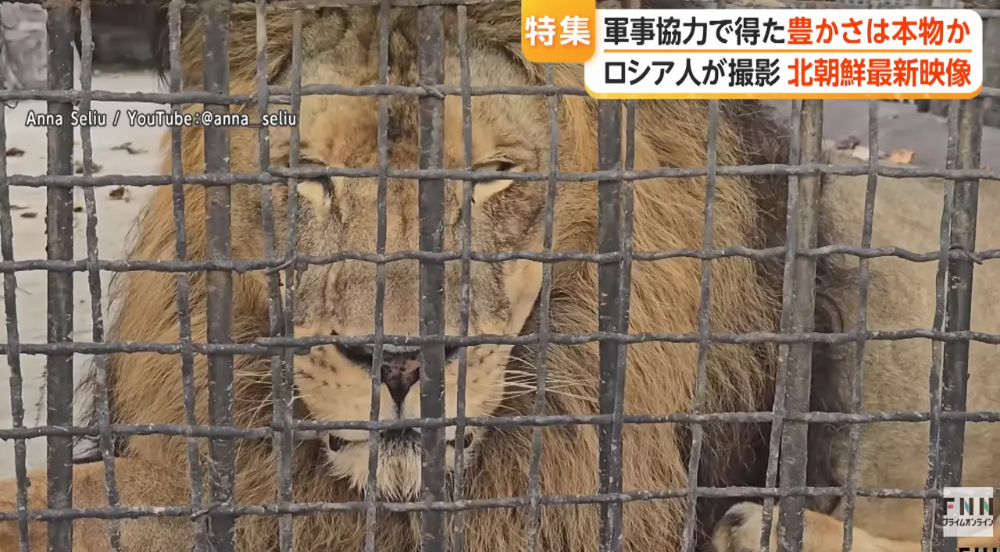

지하철에 자동개찰구 도입 ㄷㄷㄷㄷ
(근데 이게 전기 공급 안정화 신호로 봐서 진짜 발전이라고 보긴 해야 한다더라..)
스마트폰 보급률 높아져서 이제 공연에서 스마트폰 라이트로 빛 비추기 가능ㅋㅋㅋㅋ
중국산 폴더블 스마트폰들이 인기라고함 (참고로 25년에 김정은 김여정 모두 중국산 폴더블 플립 사용중인거 찍힘)
근데 사진찍힌 여자 피부 하얀거 보면 걍 개특권층일듯
평양 동물원 개

동물들 관리 상태 괜찮아보인다함 ㅋㅋㅋ
펫샵도 생기고
북한판 PC방도 생김
참고로 작년에 진수식 하다가 사고난 북한 최초의 5천톤급 구축함 강건함
내부장비 뭐 나가리 이런 말 있었는데 1년만에 취역식한거보면 돈 들여서 수리 완료했나봄
2500만 북한 인구중 딱 300만 평양에 몰빵하고 러시아한테 군인 팔아서 번돈으로 발전하니 평양도 발전이란걸 하긴 하나봄
그래봤자 한국 90년대 생활수준 정도라는데...
한국 90년대를 너무 병신취급하는거 아니냐..